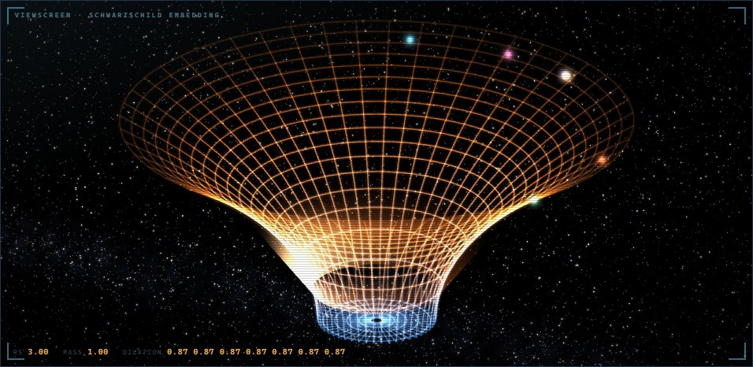

01 · The one idea
Mass curves time
Near a heavy object, clocks run slow. A clock at distance r from a black hole ticks at
rate = sqrt( 1 − rs / r )
of its normal speed, where rs, the Schwarzschild radius, grows with the mass. Gravity Well uses that exact formula as its modulation system. Every wobble in the sound — each LFO, the filter and third envelopes, the random source — is a clock sitting at a RADIUS you choose. Turn up MASS and the clocks near the hole slow down while the far ones barely notice.
Because the factor bends steeply near the horizon, the ratios between modulators change as the mass rises. A shared “mod speed” knob makes the same patch slower; this makes a different patch — the movement re-orders itself.
And at the horizon the formula reaches zero. A modulator that falls inside it freezes and holds its last value: a wobble stopped mid-swing at the bottom of a heavy note, which picks up again from where it stopped when you let go.
Why it does not go out of tune
Light climbing out of a gravity well loses energy and arrives redder — lower in frequency. Applied to a bass note that would pull every note flat. So the redshift is applied to the colour of the sound, never its pitch: the filters and the vowel bank sink, the fundamental stays where you played it. The sound gets darker and heavier and stays in tune.
Where the mass comes from
MASS is three things added together: the knob, how loud the voice is playing, and how hard you struck the key. Play harder and the well deepens by itself; back off and it lifts. At MASS 0 the well is flat and Gravity Well is an ordinary, very good bass synth.

